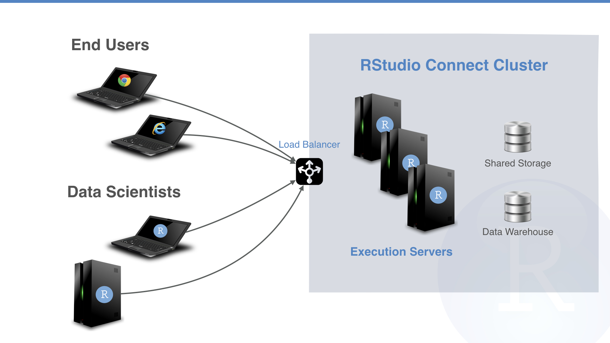

2017-12-01
We’re pleased to announce version 1.5.10 of RStudio Connect and the general availability of RStudio Connect Execution Servers. Execution Servers enable horizontal scaling and high availability for all the content you develop in R. The 1.5.10 release also includes important security improvements and bug fixes.
RStudio Connect Execution Servers

Support for high availability and horizontal scaling is now generally available through RStudio Connect Execution Servers. Execution Servers enable RStudio Connect to run across a multi-node cluster.
Today, Execution Servers act as identically configured Connect instances. Requests for Shiny applications and Plumber APIs are split across nodes by a load balancer. Scheduled R Markdown execution is distributed across the cluster through an internal job scheduler that distributes work evenly across nodes. Over time, more of Connect’s work will be handled by the internal scheduler, giving admins control over what nodes accomplish certain tasks.
The admin guide includes configuration instructions. Contact sales for licensing information.
Other Improvements
For configurations using SQLite, the SQLite database is automatically backed up while Connect is running. By default, three backups are retained and a new backup is taken every 24 hours. To disable, setup [Sqlite].Backup to false in the server configuration file.
RStudio Connect has always isolated user code from the file system. For example, application A can not access data uploaded with application B. In 1.5.10, R processes can now read from the /tmp and /var/tmp directories. This change enables shared files to be stored in /tmp and /var/tmp and helps facilitate Kerberos configurations. R processes still have isolated temporary directories provided at runtime and accessible with the tempdir function and TMPDIR environment variable. See section 12 of the admin guide for more details on process sandboxing.
Improvements have been made in RStudio Connect and the rsconnect package to support deployments using proxied authentication. See the admin guide for details on setting up the proxy. Anonymous viewers and requests authenticated with API keys are also now supported with proxied auth.
Scheduled reports are now re-run if execution is interrupted by a server restart. In a cluster, reports are automatically re-run if a node goes down, assuring high availability for scheduled renderings.
AdminEditableUsernames is disabled by default for compatibility with the RequireExternalUsernames flag introduced in 1.5.8. These changes increase security by preventing changes to data supplied by authentication providers.
User session expiration is better enforced. All user browser sessions will need to login after the 1.5.10 upgrade.
Runtime environments for Shiny R Markdown Documents have changed to support rmarkdown versions 1.7+.
You can see the full release notes for RStudio Connect 1.5.10 here.
Upgrade Planning There are no special precautions to be aware of when upgrading from 1.5.8 to 1.5.10. Installation and startup should take less than a minute.
If you haven’t yet had a chance to download and try RStudio Connect we encourage you to do so. RStudio Connect is the best way to share all the work that you do in R (Shiny apps, R Markdown documents, plots, dashboards, Plumber APIs, etc.) with collaborators, colleagues, or customers.
You can find more details or download a 45 day evaluation of the product at https://www.rstudio.com/products/connect/. Additional resources can be found below.